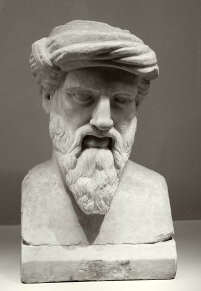

古希腊数学家、哲学家与宗教导师。他创立了集科学、哲学、宗教于一体的毕达哥拉斯学派，主张"数是万物的本原"，并开启"哲学"（Philosophia，爱智慧）一词的传说。他既仰望星空的秩序，也相信灵魂的轮回。
毕达哥拉斯的思想横跨数学、宇宙论、灵魂论与伦理生活。以下六个概念构成其教义骨架——从"数是万物的本原"出发，经过和谐与天体音乐，到灵魂转世与净化修行。点击卡片进入详细解读。
"一切皆数。"音乐、天文、几何、自然现象背后隐藏着数的比例与秩序——数学首次成为世界的结构。
灵魂不死，会在肉体间轮转。毕达哥拉斯据称记得前世的自己——灵魂轮回成为学派的核心信念。
对立面的协调产生和谐。音乐是最直接证明——琴弦的长度比例决定音程，和谐=数的比例。
行星按数比例运行，发出听不见的"天体乐声"。宇宙是一个活的音乐秩序——天文学与音乐在数中合一。
世界由有限/无限、一/多、静/动、男/女等对立构成。对立面的和谐与统一，是理解实在的钥匙。
灵魂通过音乐、数学与清心寡欲净化，最终从轮回中解脱。哲学在这里不仅是求知，更是灵魂的修行之路。
毕达哥拉斯没有亲笔著作传世（一说有，今佚），其教义通过学派口传与后世转述流传。以下五个主题是学界公认与其名相系的成就，均含详细解读。
先读概念页的"数是万物的本原"与"和谐"，建立对毕达哥拉斯核心直觉的把握：世界是秩序的，而秩序是数学的。
读学派教义页的定理与灵魂说，注意两条线索：科学路线（数、几何、天文）与宗教路线（轮回、净化）如何在同一个人身上统一。
读柏拉图《泰阿泰德》《蒂迈欧》中受毕达哥拉斯影响的部分，再读亚里士多德《形而上学》第一卷对毕达哥拉斯学派的批判；延伸阅读罗素《西方哲学史》"毕达哥拉斯"章。
本站为系统了解毕达哥拉斯而做。毕达哥拉斯是一个"神话与科学之间的形象"——他的教义以口传为主，亲笔文字无存，后世记载众说纷纭。正因如此，本站将"学术上归于其名"的贡献与其学派的传说区分呈现。
理解毕达哥拉斯，等于理解数学、科学、宗教与哲学在源头处如何交织。他让"数"同时成为宇宙的秩序与灵魂的修行——这条道路深刻影响了柏拉图与西方两千年。